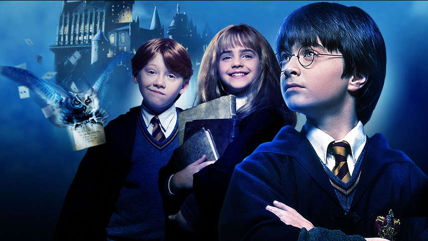
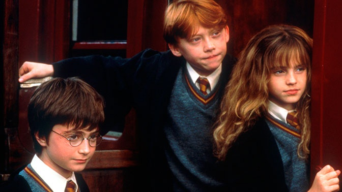
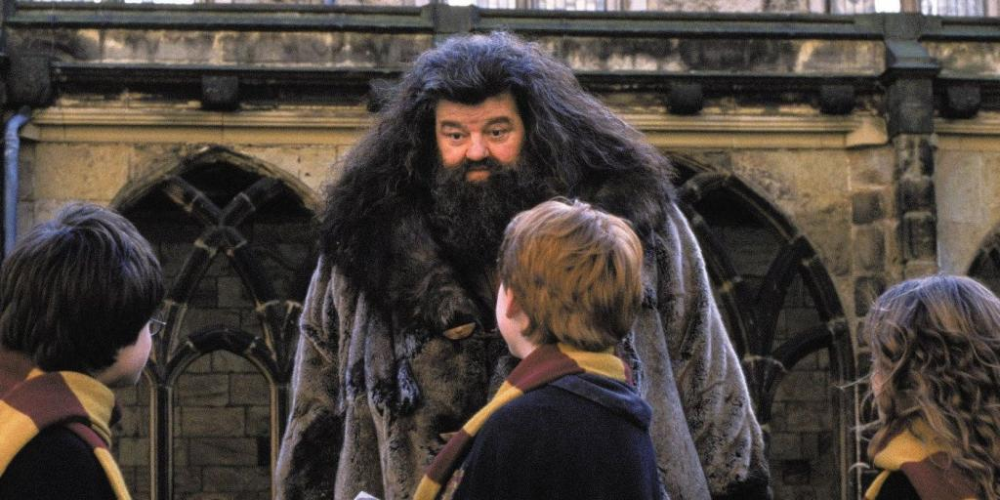
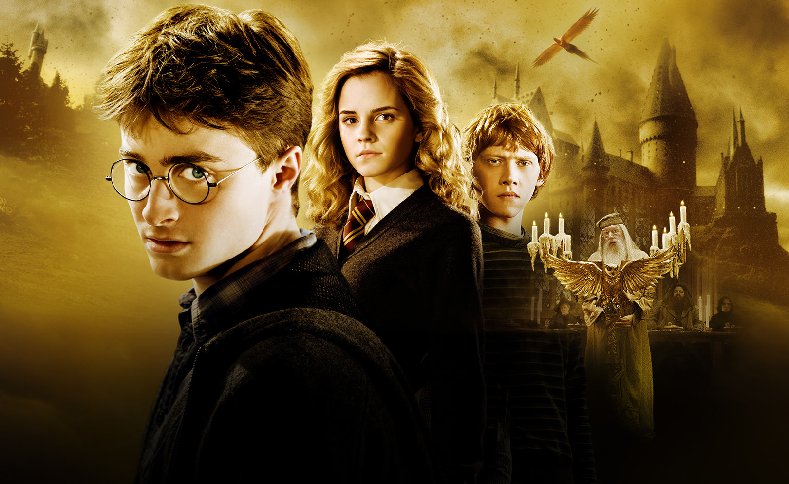

Глава 1 МАЛЬЧИК, КОТОРЫЙ ВЫЖИЛ

Мистер и миссис Дурсль проживали в доме номер четыре по Тисовой улице и всегда с гордостью заявляли,
что они, слава богу, абсолютно нормальные люди. Уж от кого-кого, а от них никак нельзя было ожидать,
чтобы они попали в какую-нибудь странную или загадочную ситуацию. Мистер и миссис Дурсль весьма
неодобрительно относились к любым странностям, загадкам и прочей ерунде.
Мистер Дурсль возглавлял фирму под названием «Граннингс», которая специализировалась на производстве дрелей.
Это был полный мужчина с очень пышными усами и очень короткой шеей.
Что же касается миссис Дурсль, она была тощей блондинкой с шеей почти вдвое длиннее, чем положено при ее росте.
Однако этот недостаток пришелся ей весьма кстати, поскольку большую часть времени миссис Дурсль следила за
соседями и подслушивала их разговоры. А с такой шеей, как у нее, было очень удобно заглядывать з
а чужие заборы.У мистера и миссис Дурсль был маленький сын по имени Дадли, и, по их мнению, он был самым
чудесным ребенком на свете.
Заметка 1. В половине девятого мистер Дурсль взял свой портфель, клюнул миссис Дурсль в щеку и попытался на прощанье
поцеловать Дадли, но промахнулся, потому что Дадли впал в ярость, что с ним происходило довольно часто.
Он раскачивался взад-вперед на стульчике, ловко выуживал из тарелки кашу и заляпывал ею стены.
— Ух, ты моя крошка, — со смехом выдавил из себя мистер Дурсль, выходя из дома.
На углу улицы мистер Дурсль заметил, что происходит что-то странное, — на тротуаре стояла кошка и
внимательно изучала лежащую перед ней карту. В первую секунду мистер Дурсль даже не понял, что именно он
увидел, но затем, уже миновав кошку, затормозил и резко оглянулся. На углу Тисовой улицы действительно стояла
полосатая кошка, но никакой карты видно не было.
Глава 2 ИСЧЕЗНУВШЕЕ СТЕКЛО
Почти десять лет прошло с того утра, когда Дурсль обнаружили на своем пороге невесть откуда взявшегося племянника, но Тисовая улица за это время почти не изменилась. Солнце вставало над теми же ухоженными садиками и освещало туже самую бронзовую четверку на входной двери дома Дурслей; оно пробиралось в гостиную, оставшуюся почти неизменной с того вечера, когда мистер Дурсль смотрел по телевизору пророческий выпуск новостей.
Только стоящие на камине фотографии в рамках свидетельствовали о том, что с тех пор прошло немало времени. Десять лет назад на фотографиях было запечатлено нечто, напоминавшее большой розовый мяч в разноцветных чепчиках, но с тех пор Дадли Дурсль вырос, и теперь на фотографиях был крупный светловолосый мальчик, сидящий на своем первом велосипеде, кружащийся на ярмарочной карусели, играющий с отцом в компьютерные игры, мальчик в объятиях целующей его матери. Однако ничто на этих фотографиях не говорило о том, что в доме живет еще один ребенок
Тем не менее Гарри Поттер все еще жил здесь, и в настоящий момент он крепко спал, хотя спать ему оставалось недолго. Заметка 2 Тетя Петунья уже проснулась и подходила к его двери, и через мгновение утреннюю тишину прорезал ее пронзительный визгливый голос:
— Подъем! Вставай! Поднимайся! Гарри вздрогнул и проснулся. Тетя продолжала барабанить в дверь.
— Живо! — провизжала она.
Глава 3 ПИСЬМА НЕВЕСТЬ ОТ КОГО
Гарри никогда еще так не наказывали, как за историю с бразильским удавом. Когда ему наконец разрешили выходить из чулана, уже начались летние каникулы, а Дадли уже успел сломать новую видеокамеру, разбил самолет с дистанционным управлением и, в первый раз сев на новый гоночный велосипед, умудрился врезаться в миссис Фигг, переходившую Тисовую улицу на костылях, и сбить ее с ног, так что она потеряла сознание.
Гарри был рад, что занятия в школе закончились, но зато теперь ему негде было скрыться от Дадли и его дружков, которые каждый день приходили к нему домой. И Пирс, и Деннис, и Малкольм, и Гордон — все они были здоровыми и безмозглыми, но Дадли был самым здоровым и самым безмозглым, и потому именно он считался их предводителем и решал, что будет делать вся компания. И вся компания соглашалась с тем, что следует заняться любимым спортом Дадли — охотой на Гарри.
По этой причине Гарри проводил как можно больше времени вне дома, шатаясь неподалеку и думая о том, что не так уж много времени осталось до конца каникул, откуда ему светил крошечный лучик надежды. В сентябре он должен был пойти в среднюю школу и наконец-то расстаться с Дадли. Дадли перевели в частную школу, где когда-то учился дядя Вернон, — в «Вонингс». Кстати, туда же устроили и Пирса Полкисса. А Гарри отдали в самую обычную общеобразовательную школу, в «Хай Камероне». Дадли это показалось невероятно смешным.
Как-то в июле тетя Петунья повезла Дадли в Лондон, чтобы купить ему фирменную форму школы «Вонингс», а Гарри отвела к миссис Фигг. Как ни странно, теперь у миссис Фигг стало куда приятнее, чем раньше. Выяснилось, что она сломала ногу, наступив на одну из своих кошек, и с тех пор уже не пылает к ним такой страстной любовью, как прежде. Так что она не показывала Гарри фотографии кошек, и даже разрешила ему посмотреть телевизор, но зато угостила шоколадным кексом, который, судя по вкусу, пролежал у нее в шкафу по крайней мере десяток лет. Заметка 3
Глава 4 ХРАНИТЕЛЬ КЛЮЧЕЙ

БУМ! — снова раздался грохот. Дадли вздрогнул и проснулся.
— Где пушка? — с глупым видом спросил он. Позади них громко хлопнула дверь, отделявшая
одну комнату от другой, и появился тяжело дышавший дядя Верной. В руках у него было ружье — так что теперь
стало ясно, что лежало в том длинном пакете, о содержимом которого он никому не рассказал.
За дверью все стихло. И вдруг…
В дверь ударили с такой силой, что она слетела с петель и с оглушительным треском приземлилась посреди комнаты.
Заметка 4
В дверном проеме стоял великан. Его лицо скрывалось за длинными спутанными прядями волос и огромной клочковатой
бородой, но зато были видны его глаза, маленькие и блестящие, как черные жуки. Великан протиснулся в хижину и
пригнулся, но голова его все равно касалась потолка—уж слишком он был велик Он наклонился, поднял дверь и легко
поставил ее на место. Грохот урагана, доносившийся снаружи, сразу стал потише. Великан повернулся и внимательно
оглядел всех, кто был в хижине.
— Ну чего, может, чайку сделаете, а? Непросто до вас добраться, да... устал я...
Великан шагнул к софе, на которой сидел застывший от страха Дадли.
— Ну-ка подвинься, пузырь, — приказал незнакомец.
Дадли взвизгнул и, соскочив с софы, рванулся к вышедшей из второй комнаты матери и спрятался за нее. Тетя
Петунья в свою очередь шагнула за спину дяди Вернона и пугливо пригнулась, словно надеялась, что за мужем ее
не будет видно.
— Ну-ка подвинься, пузырь, — приказал незнакомец.
Дадли взвизгнул и, соскочив с софы, рванулся к вышедшей из второй комнаты матери и спрятался за нее.
Тетя Петунья в свою очередь шагнула за спину дяди Вернона и пугливо пригнулась, словно надеялась, что за
мужем ее не будет видно.
Глава 5 КОСОЙ ПЕРЕУЛОК
«Это был сон,—твердо сказал он себе. — Мне приснилось, что ко мне приходил великан по имени Хагрид, чтобы сообщить мне, что я пойду учиться в школу волшебников. Когда я открою глаза, то окажусь дома в своем чулане».
Гарри вскочил с постели. Счастье распирало его изнутри, словно он проглотил воздушный шар. Гарри подошел к окну и распахнул его. Сова влетела в комнату и уронила газету прямо на Хагрида, но тот не проснулся. Затем сова спикировала на пол и набросилась на куртку Хагрида.
Великан внимательно посмотрел на него, словно напоминая о вчерашнем уговоре. Гарри вдруг понял, что ему, всегда такому вежливому и обращающемуся на «вы» ко всем старшим, Заметка 5 будет легко называть Хагрида на «ты».Потому что Хагрид относился к нему с большей теплотой, чем кто бы то ни было, и вел себя как друг.